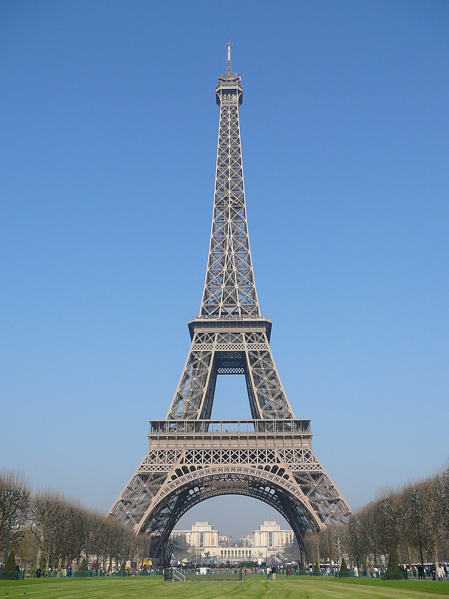

París inaugura una torre de hierro de trescientos metros, la obra más alta jamás levantada por el hombre
El ingeniero Gustave Eiffel subió a pie los mil setecientos diez escalones y plantó la bandera francesa en la cima de su criatura, que duplica de un golpe la altura de todo lo construido. Los artistas la llaman monstruosa; el pueblo hace fila.

A las dos y media de esta tarde, el ingeniero Gustave Eiffel izó el pabellón tricolor en lo más alto de la torre que lleva su nombre, ante los aplausos de obreros y autoridades reunidos en el Campo de Marte. Como los ascensores no están terminados, el constructor y su comitiva treparon a pie los mil setecientos diez escalones. Desde arriba, dicen, París entera cabe en la palma de la mano. Trescientos metros: ni la Gran Pirámide, ni las catedrales, ni el monumento a Washington —el campeón hasta ayer, con sus modestos ciento sesenta y nueve— se le acercan siquiera.
La proeza es tanto del cálculo como del hierro: dieciocho mil piezas forjadas, dos millones y medio de remaches, dos años de obra y ni un solo muerto entre los obreros del montaje, cifra acaso más asombrosa que la altura. La torre corona la Exposición Universal con que Francia celebra el centenario de su Revolución, y que abrirá sus puertas al público en mayo: se espera que millones suban a contemplar el mundo desde donde nadie lo vio jamás, salvo los pájaros y los globos.
La torre nació de un concurso para la Exposición al que se presentaron ciento siete proyectos, incluido uno que proponía levantar una guillotina gigante en memoria del 89, cosa de franceses. Ganó la casa Eiffel, que no improvisa: suyos son viaductos que cruzan valles que se tenían por imposibles, y suyo es el esqueleto de hierro de la estatua de la Libertad que Francia regaló a Nueva York. El método es el verdadero secreto: cada una de las dieciocho mil piezas se dibujó y perforó de antemano en los talleres de Levallois con precisión de décima de milímetro, y en la obra no hubo que limar nada: se montó, como un juguete de gigantes. El viento, gran enemigo de las cosas altas, fue calculado antes que la belleza; si la torre resultó hermosa, dice su autor, es porque las curvas que exigen las ráfagas coinciden con las que aprueba el ojo.
Los héroes anónimos de la jornada treparon hoy detrás del constructor: los montadores, esos volatineros del remache que trabajaron dos años suspendidos sobre el vacío, con el jornal creciendo piso a piso, y que en la cima recibieron su parte de gloria y de vino. Hubo salva de cañonazos disparada desde el segundo piso, discursos con el aliento corto —mil setecientos escalones pasan factura a los oradores— y la promesa de que los ascensores, maravilla dentro de la maravilla, estarán andando para la apertura de mayo. París, entre tanto, ya cambió de opinión sin confesarlo: en los mismos salones donde se firmó la protesta de los artistas se disputan ahora las invitaciones para subir.
No todos aplauden. Un manifiesto de artistas y escritores ilustres —Gounod, Maupassant, Dumas hijo— protestó en su hora contra «la inútil y monstruosa torre», esa «chimenea gigantesca» que aplastaría con su barbarie de hierro a Notre Dame y a los Inválidos. La concesión, por lo demás, es de veinte años: en 1909 la torre debería desmontarse. Veremos. Las ciudades tienen la costumbre de encariñarse con sus monstruos, y algo dice este cronista que París sin su torre va a resultar, andando el tiempo, tan inimaginable como Roma sin su cúpula.